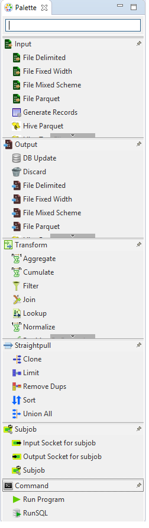
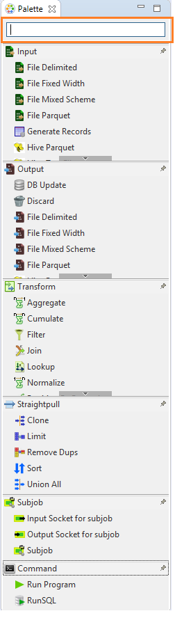

Component Palette
Component Palette contains a list of components that can be placed on the Graphical editor by either a drag operation or by simply double clicking on an item.
All components that are installed in Hydrograph are visible in the component palette. The label of each component helps identify usability in the product. Along with the labels, components have different icons that further visually help users to understand their purpose or functionality that the component is expected to perform.

Components are placed into different categories that specify their operation and functionality. Four categories are visible on the component palette- Input, Output, Transform, Straight Pull and Unknown. Each category consists of lists of components that fulfill the categorization criterion.
To find a component in the component palette use the Search Component text box provided on the top. It searches the components as one types in the box.
